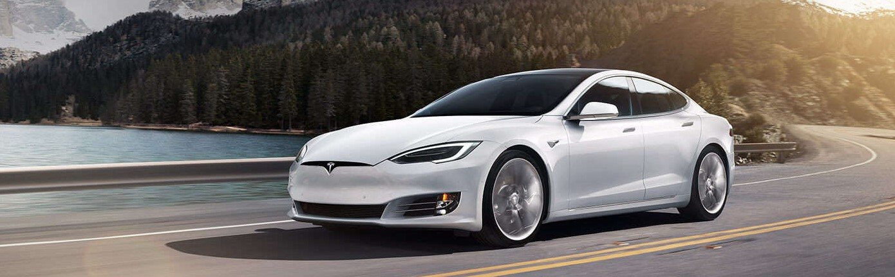
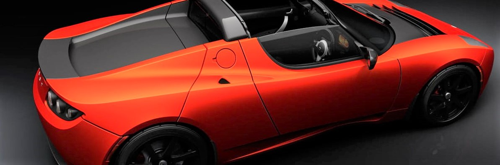
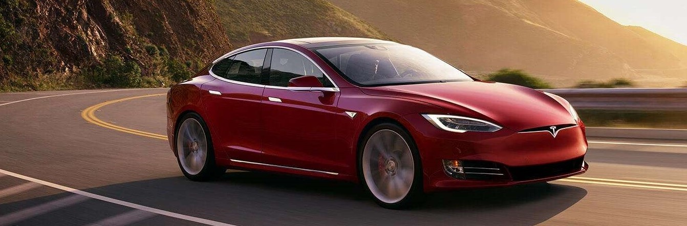

Primeros años
Tesla Motors realiza el diseño y la ingeniería de carrocería, chasis, interiores, sistemas de calefacción y aire acondicionado. Algunos subsistemas de un automóvil tradicional deben ser rediseñados en un vehículo eléctrico. Por ejemplo, Tesla Motors rediseñó el sistema de climatización para integrarlo con el sistema de gestión de temperatura del paquete de baterías.5
Al 31 de diciembre de 2011 Tesla Motors tenía 59 patentes adjudicadas y otras 230 patentes pendientes de aprobación. Las patentes comenzarán a caducar en 2026. El 12 de junio de 2014 Tesla Motors liberó todas sus patentes. Los beneficios de Tesla Motors a 31 de diciembre fueron de 111,9 millones de dólares en 2009, 116,7 millones de dólares en 2010 y 204,2 millones de dólares en 2011.5 Tesla Motors tuvo una pérdida neta en 2011 de 254,4 millones de dólares y una pérdida neta acumulada de 669,4 millones de dólares a 31 de diciembre de 2011.


